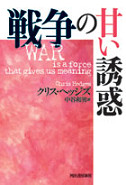

書評コーナー
季刊誌55号より
戦争の甘い誘惑
■クリス・ヘッジズ（著）、中谷和男（訳）／河出書房新社
■ISBN-13: 978-4-309-24283-5
■四六判 256ページ 価格1500 円（税別）
著者は、戦争はドラッグで、戦闘がもたらす恍惚感は感染症のアディクションという。 ドラッグの売人は歴史家や戦争特派員、映画制作者、小説家、国である。彼らは興奮とエロティシズム、グロテスクな幻想的美を煽り立て、 記憶をゆがめ文化を支配し、言葉も含めすべてを堕落させる。戦争に引き込むには、もっともらしく意味づけし、 自分たちは善なのだと人々に思い込ませる。報道はこのまやかし（戦争神話）を撒き散らし、暴力と殺人、人の残酷さと愚かさを正当化する。 神話は本質的に無知の上に成り立ち、戦争神話によって歴史は歪曲され、知識人や宗教家は愚劣な理論を擁護し、 政治家は人権侵害と殺戮を繰り返す者を賞賛する、と著者は具体例を挙げて指摘する。
評者が本書に惹かれたのは、現政権の好戦的な姿勢が生み出される背景を知りたいと思ったからである。 今日の日本は、歴史の歪曲者が権力を握り、公共放送を支配し、敬虔な国家神道信者が表舞台に出ている。 過去の歴史をあるがまま認める人もいるが、「自分たちだけが悪いのではない」と相対主義に陥りがちである。 現政権指導者のような不誠実な輩は「甘い誘惑」から逃れられないことを歴史が示しており、戦争への危険性は真である。（た）